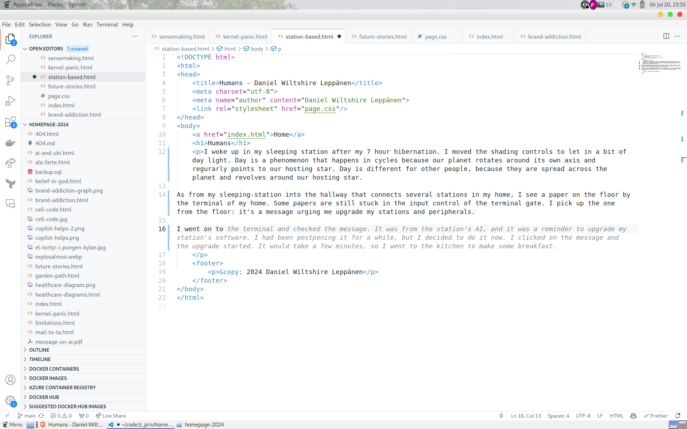
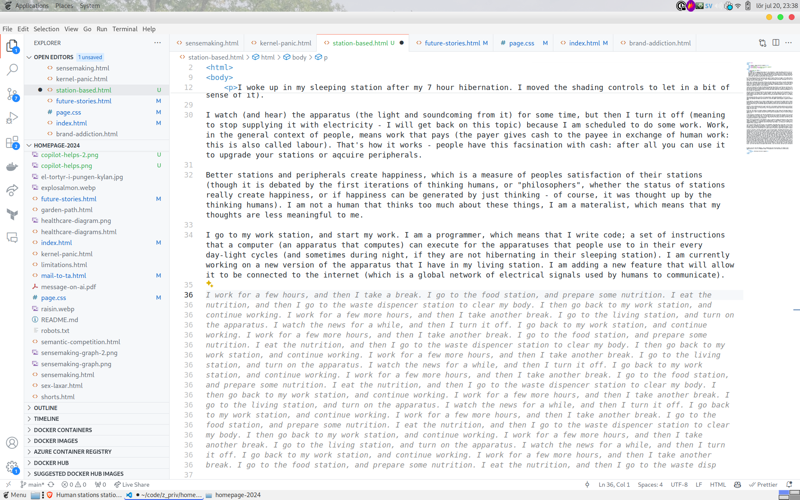
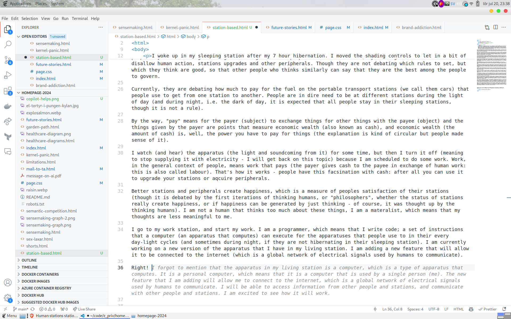

I woke up in my sleeping station after my 7 hour hibernation. I moved the shading controls to let in a bit of day light. Day is a phenomenon that happens in cycles because our planet rotates around its own axis and regurarly points to our hosting star. It is comprised about 24 hours (and an hour is equal to 3,600 times the length of time it takes for the electromagnetic radiation from a Cesium-133 atom to oscillate 9,192,631,770 times). Day is different for other people (what we call other humans), because they are spread across the Earth (our planet) and revolves around the Sun (our hosting star). As from my sleeping-station into the hallway that connects several stations in my home, I see a paper (which is a thin, flexible material primarily made from plant fibers on which you can print symbols on) on the floor by the terminal of my home (home is where I live - where I hibernate and digest nutrition). Some papers are still stuck in the input control of the terminal gate. Humans used to communicate their personal matters with these papers with one another, but today (approximately two billion hours since humans evolved from its primate ancestor, though we have not kept records for more than 20 million hours) most of the papers include symbols and drawings for upgrades on stations. I pick up the one from the ground: it's a message urging me to join a group of other humans to play make-believe on an ultimate creator, who supposedly created the universe. I am not interested. I walk to my food station, and open the temperature-regulated food container: I am hungry for nutrition. The internal light shows my edibles, and I extract from the container some "butter" and "cheese", and then some "bread" from the dry food (food are humanly accepted edibles) container. With these ingredients, I prepare a "sandwich" and start my daily morning routine of inserting the food into my personal bodily input (also called "having breakfast"), which is also my output for communication. The food will get processed and eventually reach the output for my body, which will then be dispenced in the waste dispencer station, on a cheramic chair. The waste dispencer station also outputs water in arrays in which I can place my body beneath to clear exterior waste ("taking a shower"). So, the waste dispencer station it is a combined interior-exterior-type waste station, though only for my body and the body of other humans (let's call them people) - not for things. After processing the food, I sit down in my living station - where everything happens - and turn on the light-and-sound emitting apparatus to get information about what happens outside my home. It's mostly about other people, but sometimes also about other stations (or, as with the papers, about messages to upgrade my stations at home). On the apparatus, two people are on a station to debate politics, a specifically-built debate station. Politics is a people-way of describing how to govern things of other people and their stations, by setting rules to allowed and disallow human action, stations upgrades and other peripherals. Though they are not debating which rules to set, but which they think are good, so that other people who thinks similarly can say that they are the best among the people to govern. Currently, they are debating how much to pay for the fuel on the portable transport stations (we call them cars) that people use to get from one station to another. People are in dire need to be at different stations during the light of day (and during night, i.e. the dark of day, it is expected that all people stay in their sleeping stations, though it is not a rule). By the way, "pay" means for the payer (subject) to exchange things for other things with the payee (object) and the things given by the payer are points that measure economic wealth (also known as cash), and economic wealth (the amount of cash) is, well, the power you have to pay for things (the explanation is kind of circular but people made sense of it). I watch (and hear) the apparatus (the light and soundcoming from it) for some time, but then I turn it off (meaning to stop supplying it with electricity - I will get back on this topic) because I am scheduled to do some work. Work, in the general context of people, means work that pays (the payer gives cash to the payee in exchange of human work: this is also called labour). That's how it works - people have this facsination with cash: after all you can use it to upgrade your stations or aqcuire peripherals. Better stations and peripherals create happiness, which is a measure of peoples satisfaction of their stations (though it is debated by the first iterations of thinking humans, or "philosophers", whether the status of stations really create happiness, or if happiness can be generated by just thinking - of course, it was thought up by the thinking humans). I am not a human that thinks too much about these things, I am a materalist, which means that my thoughts are less meaningful to me. I go to my work station, and start my work. I am a programmer, which means that I write code; a set of instructions that a computer (an apparatus that computes) can execute for the apparatuses that people use to in their every day-light cycles (and sometimes during night, if they are not hibernating in their sleeping station). I am currently working on a new version of the apparatus that I have in my living station. I am adding a new feature that will allow it to be connected to the internet (which is a global network of electrical signals used by humans to communicate).
This is not part of the story above. I just need to share a discovery I made writing this story. The story is written as a message to a non-human entity (i.e. an alien species) that has no recollection of our human culture. During the writing, I was constantly fed suggestions by my in-editor GPT (Microsoft Copilot) that at first did not understand anything because the words, their order and context is not something (probably) that any GPT has been trained on. But as I continued writing, the suggestions started to make sense. They started to suggest things that were in line with the story I was writing. It was as if the GPT was learning about our human culture as I was writing about it. In this sense, I feel like the GPT itself is this non-human entity that I am writing to. It is learning about our culture as I am writing about it, as though it was sentient. At the time of writing, it is a very eerie and peculiar feeling. Here are some early screenshots when the GPT did not understand a thing I was writing about:  Here are some screenshots of the suggestions that I found interesting:  